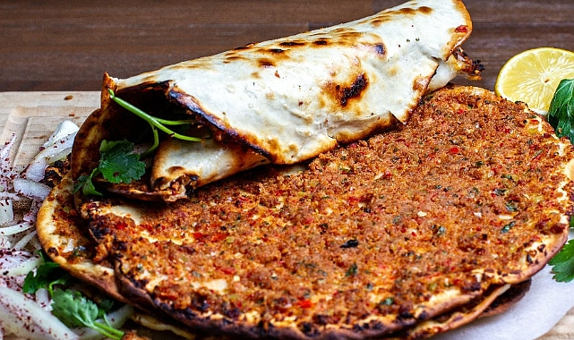
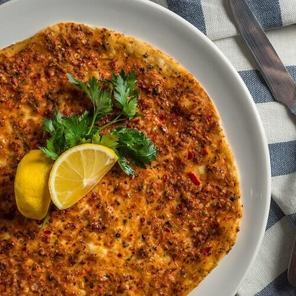

Lahmacun

Description
Lahmacun is a type of stuffed pide in Turkish cuisine, made by spreading minced meat, parsley, onion, garlic, black pepper and spices such as isot (red pepper) on rolled dough and then baking it in a stone oven. It is also called Turkish pizza.
What is lahmacun ?
For thousands of years, flatbreads of the Middle East were traditionally baked either in tandoors or in metal pans such as Tava. They were often used to wrap meat and other ingredients, thus providing practicality and ease of transportation. Before the widespread adoption of large stone ovens in the Middle Ages, flatbreads filled or garnished with meat and other ingredients were often baked separately. A variety of such dishes became popular in areas under the influence of the Ottoman Empire, as well as in Turkey, Armenia, Lebanon, and other countries in the region. An example of such dishes is a particular type of thin flatbread filled with spiced ground meat, such as Lahmacun.

Ingredients
Dough
- 1/2 lb uncooked store-bought organic pizza dough
Topping
- 1/2 sweet red pepper, cored, cut into chunks
- 1 shallot, halved
- 2 garlic cloves, peeled
- 1/2 oz fresh parsley leaves with some stem
- 7 oz ground lamb or ground beef
- 1 tsp smoked paprika
- 1 tsp ground allspice
- 1/2 tsp ground cumin
- 1/2 tsp Aleppo-style pepper
- 1/2 tsp ground cinnamon
- 1/2 tsp cayenne pepper
- 1/2 tsp cayenne pepper
- 4 tbsp tomato paste
- 2 tbsp Private Reserve Greek extra virgin olive oil
- Lemon wedges for later
Steps
- Heat oven to 450 degrees F. Adjust oven rack to the middle. (or see stove-top instructions in notes)
- Prepare the meat mixture. In the large bowl of a food processor, fitted with blade, add red peppers, shallot, garlic, and parsley. Pulse a few times to chop. To the mixture, add ground lamb (or beef). Season with spices and salt. Add tomato paste and extra virgin olive oil. Now pulse again until well-combined (about 8 to 10 pulses.)
- Prepare two large rimmed baking sheets lined with parchment paper (you’ll be using these to bake the Lahmacun in batches.)
- Divide the pizza dough into 4 equal balls (about 2 oz each.) Working with one ball of dough at a time, place on a floured surface. Using a rolling pin, roll dough out into as thin as you can to a disk that’s about 8 or 9 inches in diameter.
- Assemble Lahmacun. Place one flatbread disk on one of the prepared pans. Reshape as needed. Spoon 3–4 tbsp topping onto dough and spread topping evenly to edges, leaving a thin boarder.
- Bake in heated oven for about 5 to 7 minutes or until dough and meat are fully cooked (dough will be a little crusty around the edges.)
- Repeat steps 5 and 6 with the remaining dough.
- Squeeze a little lemon juice on top. Serve Lahmacun hot or at room temperature. See notes below for how to serve.